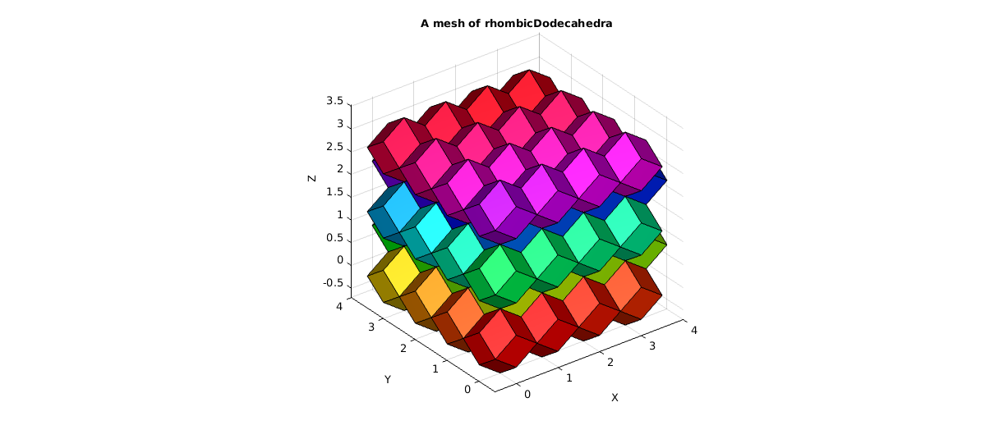
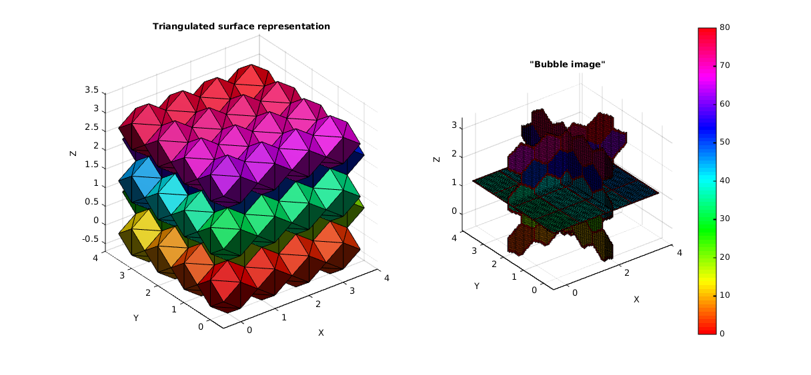

rhombicDodecahedronMesh
Below is a demonstration of the features of the rhombicDodecahedronMesh function
Contents
clear; close all; clc;
Plot settings
figColor='w'; figColorDef='white'; fontSize=10; cmap=gray(250); faceAlpha1=1; faceAlpha2=0.25; patch_types={'sx','sy','sz','v'}; ptype=3; no_slices=4; mark_siz1=30; mark_siz2=20; mark_siz3=50; line_width1=2; line_width2=2; F_alpha1=1; F_alpha2=1;
Creating a mesh of rhombic dodecahedra
r=sqrt(2)/2; %Radii, the chosen level results in X,Y spacings of 1 n=3; %Desired number of copies in each direction %The actual input nCopies=[n+1 n+1 n+ceil((n+1)/2)]; %Number of offset copies [Fc_Q,Fc_T,Ft_Q,Ft_T,Ct_Q,Ct_T,Vt]=rhombicDodecahedronMesh(r,nCopies);
Plotting results
hf1=figuremax(figColor,figColorDef); set(gcf,'renderer','zbuffer'); title('A mesh of rhombicDodecahedra','FontSize',fontSize); xlabel('X','FontSize',fontSize); ylabel('Y','FontSize',fontSize); zlabel('Z','FontSize',fontSize); hold on; patch('Faces',Ft_Q,'Vertices',Vt,'FaceColor','flat','CData',Ct_Q,'FaceAlpha',F_alpha1); colormap(hsv); set(gca,'FontSize',fontSize); view(3); axis tight; axis equal; axis vis3d; grid on; camlight('headlight'); lighting flat;
Plotting results
hf1=figuremax(figColor,figColorDef); set(gcf,'renderer','zbuffer'); title('A mesh of rhombicDodecahedra plotted with triangular faces','FontSize',fontSize); xlabel('X','FontSize',fontSize); ylabel('Y','FontSize',fontSize); zlabel('Z','FontSize',fontSize); hold on; patch('Faces',Ft_T,'Vertices',Vt,'FaceColor','flat','CData',Ct_T,'FaceAlpha',F_alpha1); colormap(hsv); set(gca,'FontSize',fontSize); view(3); axis tight; axis equal; axis vis3d; grid on; camlight('headlight'); lighting flat;
EXAMPLE: Creating a "bubble image"
The triangular surface output can but used with the function triSurf2Im to convert the patch data to image data where the interior and exterior are labelled differently. For the mesh created the result is like a highly regular bubble image.
voxelSize=0.05; [M,G,ML]=triSurf2Im(Ft_T,Vt,voxelSize); imOrigin=G.origin;
Plot results
hf1=figuremax(figColor,figColorDef); subplot(1,2,1); title('Triangulated surface representation','FontSize',fontSize); xlabel('X','FontSize',fontSize);ylabel('Y','FontSize',fontSize); zlabel('Z','FontSize',fontSize); hold on; patch('Faces',Ft_T,'Vertices',Vt,'FaceColor','flat','CData',Ct_T,'FaceAlpha',F_alpha1); camlight('headlight'); lighting flat; axis equal; view(3); axis tight; grid on; set(gca,'FontSize',fontSize); subplot(1,2,2); title('"Bubble image"','FontSize',fontSize); xlabel('X','FontSize',fontSize);ylabel('Y','FontSize',fontSize); zlabel('Z','FontSize',fontSize); hold on; % patch('Faces',F,'Vertices',V,'FaceColor','g','EdgeColor','none','FaceAlpha',faceAlpha2); L_plot=false(size(ML)); L_plot(:,:,round(size(ML,3)/2))=1; L_plot=L_plot&~isnan(ML); [Fm,Vm,Cm]=ind2patch(L_plot,ML,'sk'); [Vm(:,1),Vm(:,2),Vm(:,3)]=im2cart(Vm(:,2),Vm(:,1),Vm(:,3),voxelSize*ones(1,3)); Vm=Vm+imOrigin(ones(size(Vm,1),1),:); patch('Faces',Fm,'Vertices',Vm,'FaceColor','flat','CData',Cm,'EdgeColor','k','FaceAlpha',faceAlpha1); L_plot=false(size(ML)); L_plot(round(size(ML,1)/2),:,:)=1; L_plot=L_plot&~isnan(ML); [Fm,Vm,Cm]=ind2patch(L_plot,ML,'si'); [Vm(:,1),Vm(:,2),Vm(:,3)]=im2cart(Vm(:,2),Vm(:,1),Vm(:,3),voxelSize*ones(1,3)); Vm=Vm+imOrigin(ones(size(Vm,1),1),:); patch('Faces',Fm,'Vertices',Vm,'FaceColor','flat','CData',Cm,'EdgeColor','k','FaceAlpha',faceAlpha1); L_plot=false(size(ML)); L_plot(:,round(size(ML,2)/2),:)=1; L_plot=L_plot&~isnan(ML); [Fm,Vm,Cm]=ind2patch(L_plot,ML,'sj'); [Vm(:,1),Vm(:,2),Vm(:,3)]=im2cart(Vm(:,2),Vm(:,1),Vm(:,3),voxelSize*ones(1,3)); Vm=Vm+imOrigin(ones(size(Vm,1),1),:); patch('Faces',Fm,'Vertices',Vm,'FaceColor','flat','CData',Cm,'EdgeColor','k','FaceAlpha',faceAlpha1); colormap(hsv(max(ML(:)))); hc=colorbar; axis equal; view(3); axis tight; grid on; set(gca,'FontSize',fontSize); drawnow;

GIBBON www.gibboncode.org
Kevin Mattheus Moerman, gibbon.toolbox@gmail.com